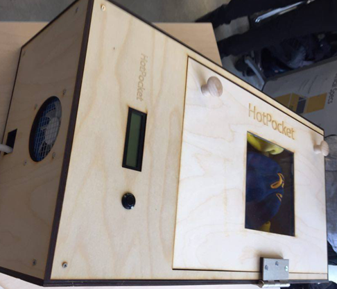
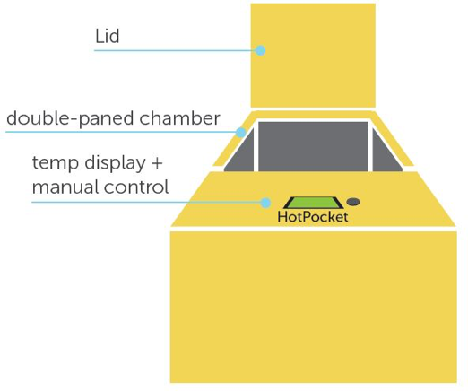

Hot Pocket - Automized Clothes Warmer


Class: ME 290U - Interactive Device Design
Role: Software Engineer, Hardware Engineer
Designed an automated clothes warmer for those that want to wake up and enjoy the pleasures of crisp pre-heated clothing. Put clothes inside the Hot Pocket and set an alarm on your phone and you'll always have warmth in the coldest of mornings.
This project uses a simple closed loop control system with 6 temperature sensors inside the heating chamber to accurately maintain a constant temperature to heat the clothes inside. Heating is achieved using heated wires and convection, a mechanism much like that of a hair dryer.
As the software and hardware lead, I designed the embeded system used inside this device as well as the accompanying bluetooth communication to an android based device. Prototyping was done primarily on a KL25Z microcontroller.
Click to learn more